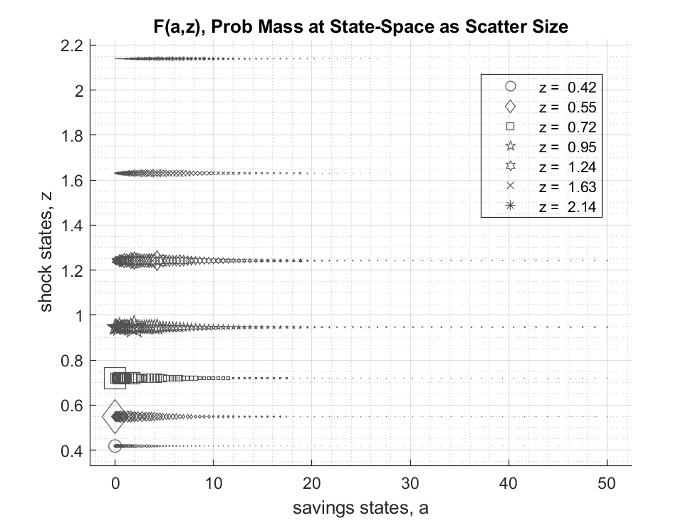
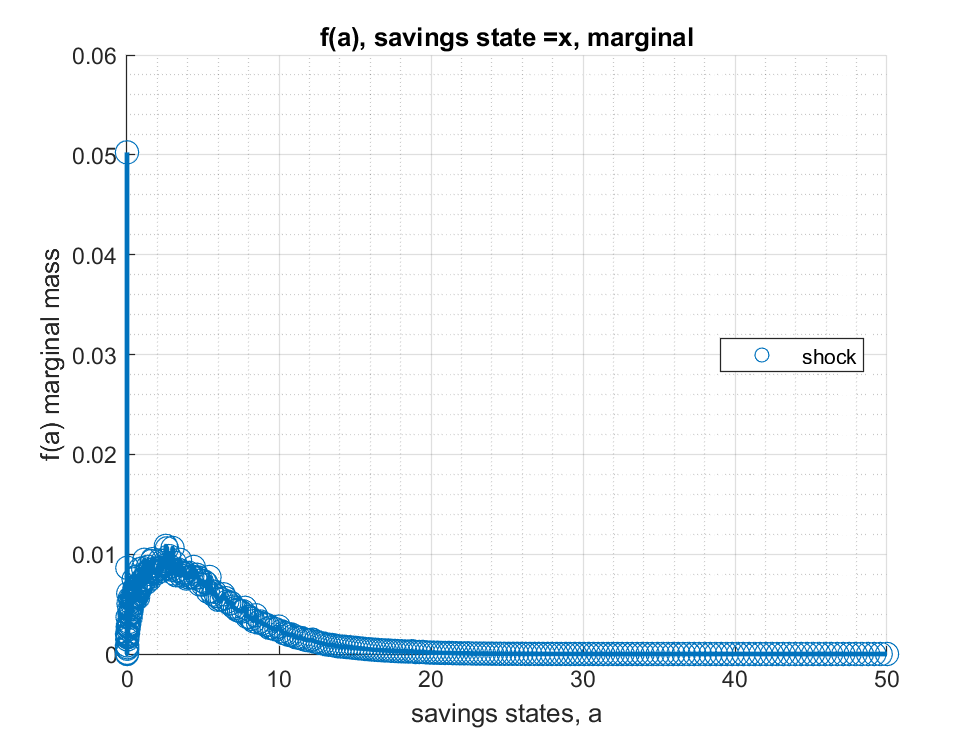
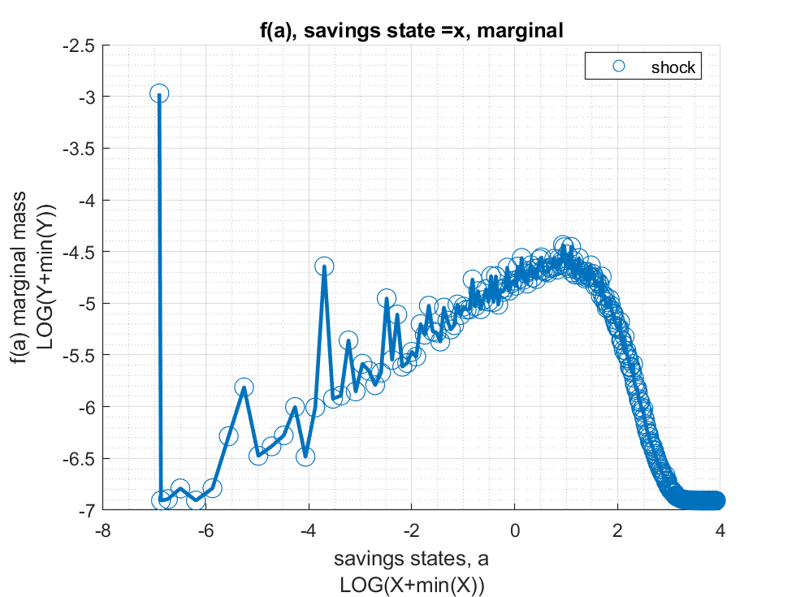
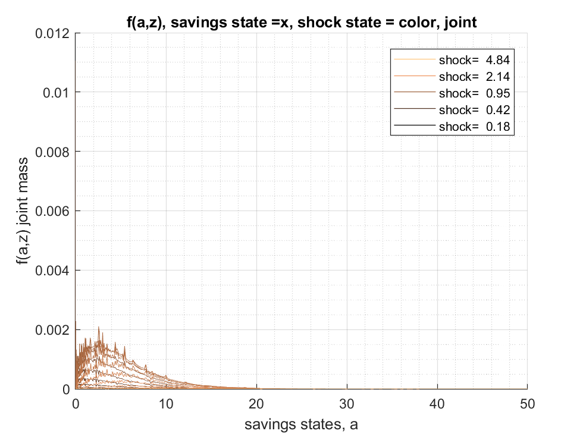
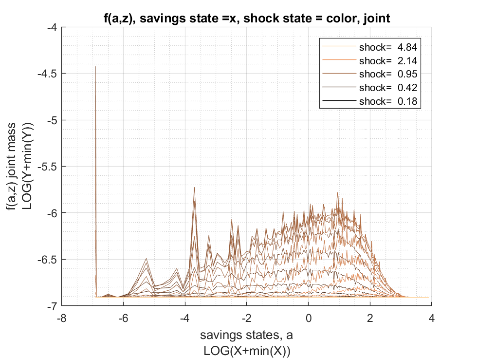
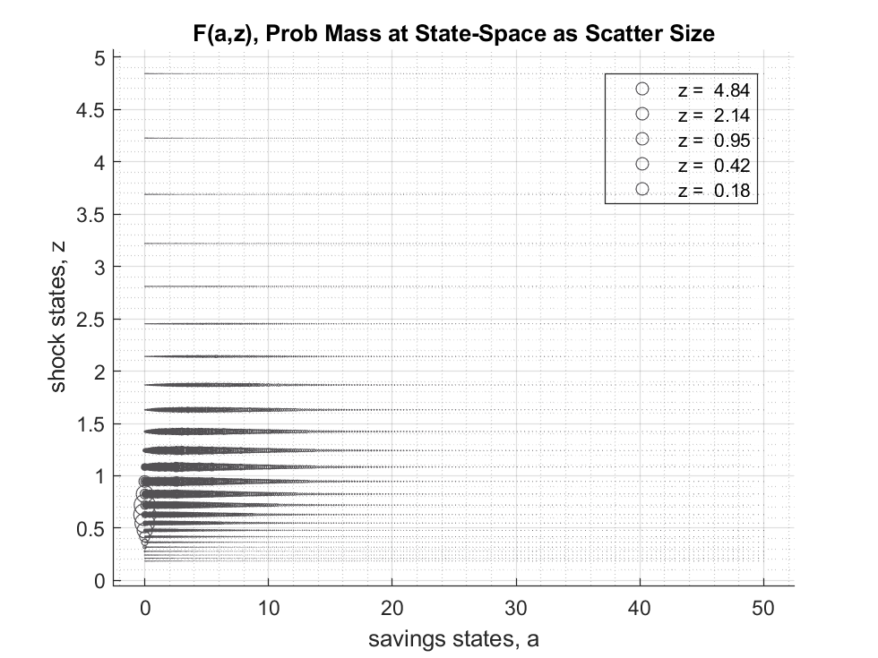
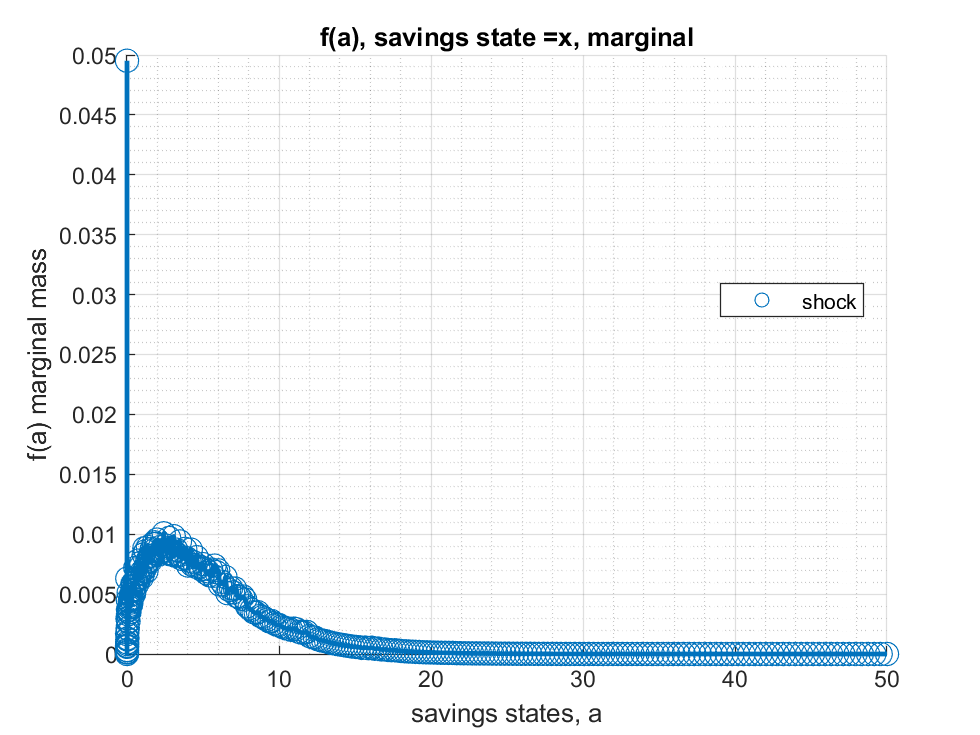
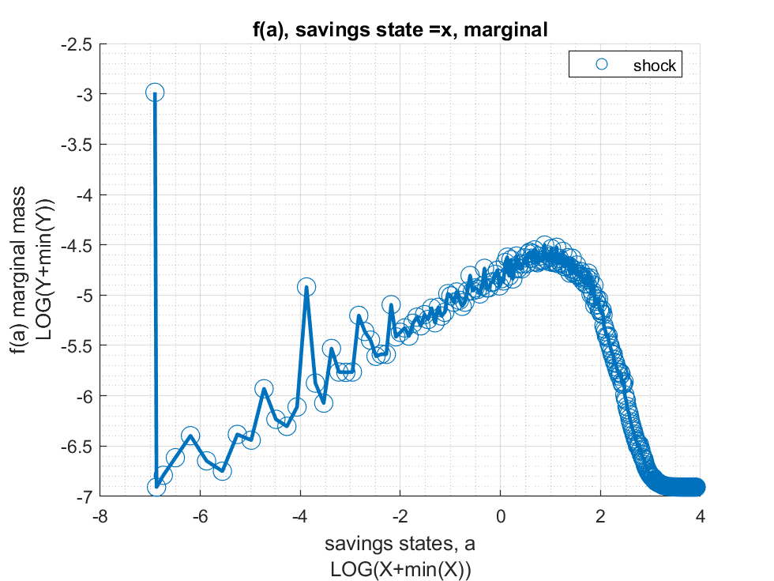

Chapter 2 Stationary Distribution
2.1 FF_DS_AZ_LOOP Dynamic Savings Loop Discrete Distribution
Go back to fan’s MEconTools Toolbox (bookdown), Matlab Code Examples Repository (bookdown), or Math for Econ with Matlab Repository (bookdown).
This is the example vignette for function: ff_ds_az_loop from the MEconTools Package. F(a,z) discrete probability mass function given policy function solution with discretized savings choices.
Distribution for Common Choice and States Grid : ff_ds_az_loop
Distribution for States Grid + Continuous Exact Savings as Share of Cash-on-Hand : ff_ds_az_cts_loop
2.1.1 Test FF_DS_AZ_LOOP Defaults
Call the function with defaults. By default, shows the asset policy function summary. Model parameters can be changed by the mp_params.
%mp_params
mp_params = containers.Map('KeyType','char', 'ValueType','any');
mp_params('fl_crra') = 1.5;
mp_params('fl_beta') = 0.94;
% call function
ff_ds_az_loop(mp_params);
Elapsed time is 0.159342 seconds.
----------------------------------------
xxxxxxxxxxxxxxxxxxxxxxxxxxxxxxxxxxxxxxxx
CONTAINER NAME: mp_ffcmd ND Array (Matrix etc)
xxxxxxxxxxxxxxxxxxxxxxxxxxxxxxxxxxxxxxxx
i idx ndim numel rowN colN sum mean std coefvari min max
_ ___ ____ _____ ____ ____ ______ ______ ______ ________ ___ ___
ap 1 1 2 700 100 7 9855.1 14.079 14.408 1.0234 0 50
xxx TABLE:ap xxxxxxxxxxxxxxxxxx
c1 c2 c3 c4 c5 c6 c7
______ ______ ______ ________ _______ _______ ______
r1 0 0 0 0.045213 0.25576 0.61095 1.0362
r2 0 0 0 0.045213 0.25576 0.61095 1.0362
r3 0 0 0 0.045213 0.25576 0.61095 1.0362
r4 0 0 0 0.06647 0.25576 0.61095 1.0362
r5 0 0 0 0.06647 0.25576 0.61095 1.164
r96 43.924 43.924 43.924 43.924 43.924 45.102 45.102
r97 45.102 45.102 45.102 45.102 45.102 46.298 46.298
r98 46.298 46.298 46.298 46.298 46.298 47.513 47.513
r99 47.513 47.513 47.513 47.513 47.513 48.747 48.747
r100 48.747 48.747 48.747 48.747 48.747 50 50
FF_DS_AZ_LOOP finished. Distribution took = 0.13388
----------------------------------------
xxxxxxxxxxxxxxxxxxxxxxxxxxxxxxxxxxxxxxxx
CONTAINER NAME: mp_ddcmd ND Array (Matrix etc)
xxxxxxxxxxxxxxxxxxxxxxxxxxxxxxxxxxxxxxxx
i idx ndim numel rowN colN sum mean std coefvari min max
_ ___ ____ _____ ____ ____ ___ _________ _________ ________ ________ ________
fa 1 1 2 100 100 1 1 0.01 0.016114 1.6114 0 0.121
faz 2 2 2 700 100 7 1 0.0014286 0.0035847 2.5093 0 0.052693
fz 3 3 2 7 7 1 1 0.14286 0.11742 0.82196 0.015625 0.3125
xxx TABLE:fa xxxxxxxxxxxxxxxxxx
c1
__________
r1 0.121
r2 0.00034068
r3 0
r4 0.010458
r5 0.0048751
r96 1.1148e-21
r97 3.227e-22
r98 7.9165e-23
r99 1.4982e-23
r100 1.7037e-24
xxx TABLE:faz xxxxxxxxxxxxxxxxxx
c1 c2 c3 c4 c5 c6 c7
__________ __________ __________ __________ __________ __________ __________
r1 0.0084023 0.03778 0.052693 0.018985 0.0029243 0.00020787 5.6301e-06
r2 0.00018105 0.0001207 3.3528e-05 4.9671e-06 4.1392e-07 1.8397e-08 3.4068e-10
r3 0 0 0 0 0 0 0
r4 0.00016518 0.002081 0.005593 0.0022334 0.00035834 2.6032e-05 7.146e-07
r5 0.00021881 0.00067299 0.0026761 0.0011123 0.00018127 1.3278e-05 3.6641e-07
r96 1.7183e-25 2.8942e-24 2.2565e-23 1.0675e-22 3.1764e-22 4.9586e-22 1.6895e-22
r97 3.2228e-26 6.111e-25 5.3384e-24 2.7969e-23 9.0055e-23 1.4769e-22 5.1004e-23
r98 4.5065e-27 1.0023e-25 1.0174e-24 6.0677e-24 2.15e-23 3.7371e-23 1.3103e-23
r99 3.8775e-28 1.0954e-26 1.38e-25 9.8022e-25 3.9213e-24 7.3193e-24 2.6118e-24
r100 1.1692e-29 5.3148e-28 9.7109e-27 8.9563e-26 4.2252e-25 8.6574e-25 3.1562e-25
xxx TABLE:fz xxxxxxxxxxxxxxxxxx
c1
________
r1 0.015625
r2 0.09375
r3 0.23438
r4 0.3125
r5 0.23438
r6 0.09375
r7 0.0156252.1.2 Test FF_DS_AZ_LOOP Speed Tests
Call the function with different a and z grid size, print out speed:
mp_support = containers.Map('KeyType','char', 'ValueType','any');
mp_support('bl_timer') = true;
mp_support('ls_ffcmd') = {};
mp_support('ls_ddcmd') = {};
mp_support('ls_ddgrh') = {};
mp_support('bl_show_stats_table') = false;
% A grid 50, shock grid 5:
mp_params = containers.Map('KeyType','char', 'ValueType','any');
mp_params('it_a_n') = 50;
mp_params('it_z_n') = 5;
ff_ds_az_loop(mp_params, mp_support);
Elapsed time is 0.025627 seconds.
FF_DS_AZ_LOOP finished. Distribution took = 0.066138
% A grid 100, shock grid 7:
mp_params = containers.Map('KeyType','char', 'ValueType','any');
mp_params('it_a_n') = 100;
mp_params('it_z_n') = 7;
ff_ds_az_loop(mp_params, mp_support);
Elapsed time is 0.155714 seconds.
FF_DS_AZ_LOOP finished. Distribution took = 0.11763
% A grid 200, shock grid 9:
mp_params = containers.Map('KeyType','char', 'ValueType','any');
mp_params('it_a_n') = 200;
mp_params('it_z_n') = 9;
ff_ds_az_loop(mp_params, mp_support);
Elapsed time is 0.332056 seconds.
FF_DS_AZ_LOOP finished. Distribution took = 0.326482.1.3 Test FF_DS_AZ_LOOP A grid 100 Shock grid 7
Call the function with different a and z grid size, print out speed:
mp_support = containers.Map('KeyType','char', 'ValueType','any');
mp_support('bl_timer') = true;
mp_support('ls_ffcmd') = {};
mp_support('ls_ddcmd') = {};
mp_support('ls_ddgrh') = {'faz','fa'};
mp_support('bl_show_stats_table') = true;
mp_params = containers.Map('KeyType','char', 'ValueType','any');
mp_params('it_a_n') = 100;
mp_params('it_z_n') = 7;
ff_ds_az_loop(mp_params, mp_support);
Elapsed time is 0.144655 seconds.
FF_DS_AZ_LOOP finished. Distribution took = 0.13625

xxx tb_outcomes: all stats xxx
OriginalVariableNames ap v c y coh savefraccoh
______________________ __________ __________ __________ __________ __________ ___________
{'mean' } 2.7094 6.6576 1.5089 1.5084 4.2183 0.48487
{'sd' } 2.8976 2.0599 0.35843 0.52611 3.2096 0.25477
{'coefofvar' } 1.0694 0.3094 0.23755 0.34879 0.76088 0.52544
{'min' } 0 1.6927 0.58543 0.58543 0.58543 0
{'max' } 50 19.139 4.9969 4.9969 54.997 0.93121
{'pYis0' } 0.070216 0 0 0 0 0.070216
{'pYls0' } 0 0 0 0 0 0
{'pYgr0' } 0.92978 1 1 1 1 0.92978
{'pYisMINY' } 0.070216 0.0057675 0.0057675 0.0057675 0.0057675 0.070216
{'pYisMAXY' } 2.1143e-10 3.7149e-11 3.7149e-11 3.7149e-11 3.7149e-11 2.065e-11
{'p0_01' } 0 1.6927 0.58543 0.58543 0.58543 0
{'p0_1' } 0 1.6927 0.58543 0.58543 0.58543 0
{'p1' } 0 2.7674 0.76855 0.61362 0.76855 0
{'p5' } 0 3.273 0.91608 0.77504 1.009 0
{'p10' } 0.06647 4.0961 1.0308 0.92803 1.1055 0.067651
{'p20' } 0.37601 4.8781 1.2371 1.0319 1.555 0.22796
{'p25' } 0.52503 5.2636 1.2781 1.0731 1.8354 0.28067
{'p30' } 0.7048 5.4822 1.3424 1.1472 2.0866 0.35907
{'p40' } 1.3008 6.0574 1.3953 1.3424 2.6774 0.48584
{'p50' } 1.9422 6.542 1.4931 1.4023 3.3444 0.54915
{'p60' } 2.5275 7.1265 1.6174 1.4954 4.1208 0.60499
{'p70' } 3.456 7.657 1.6502 1.7803 5.1554 0.67918
{'p75' } 3.9869 8.0469 1.733 1.824 5.7555 0.69673
{'p80' } 4.564 8.4125 1.8179 1.8875 6.1793 0.72076
{'p90' } 6.5844 9.3821 1.9734 2.3349 8.568 0.76882
{'p95' } 8.1844 10.225 2.1388 2.4776 10.358 0.80411
{'p99' } 13.136 11.834 2.3359 3.1677 15.511 0.85404
{'p99_9' } 18.839 13.486 2.7733 3.4782 21.332 0.88316
{'p99_99' } 21.778 14.354 3.0939 3.7505 24.78 0.89063
{'fl_cov_ap' } 8.396 5.2587 0.88866 0.93721 9.2847 0.58458
{'fl_cor_ap' } 1 0.88106 0.85565 0.61478 0.99833 0.7919
{'fl_cov_v' } 5.2587 4.243 0.71989 0.93806 5.9786 0.453
{'fl_cor_v' } 0.88106 1 0.97505 0.86559 0.90428 0.86321
{'fl_cov_c' } 0.88866 0.71989 0.12847 0.15253 1.0171 0.079518
{'fl_cor_c' } 0.85565 0.97505 1 0.80886 0.88413 0.8708
{'fl_cov_y' } 0.93721 0.93806 0.15253 0.2768 1.0897 0.080824
{'fl_cor_y' } 0.61478 0.86559 0.80886 1 0.64534 0.603
{'fl_cov_coh' } 9.2847 5.9786 1.0171 1.0897 10.302 0.6641
{'fl_cor_coh' } 0.99833 0.90428 0.88413 0.64534 1 0.81215
{'fl_cov_savefraccoh'} 0.58458 0.453 0.079518 0.080824 0.6641 0.064906
{'fl_cor_savefraccoh'} 0.7919 0.86321 0.8708 0.603 0.81215 1
{'fracByP0_01' } 0 0.0014664 0.0022377 0.0022385 0.00080043 0
{'fracByP0_1' } 0 0.0014664 0.0022377 0.0022385 0.00080043 0
{'fracByP1' } 0 0.0029302 0.01567 0.00403 0.0055106 0
{'fracByP5' } 0 0.021763 0.026172 0.02466 0.015702 0
{'fracByP10' } 0.0004071 0.050764 0.058937 0.05144 0.022123 0.0021411
{'fracByP20' } 0.0096198 0.1171 0.13549 0.11855 0.05416 0.033082
{'fracByP25' } 0.017608 0.15851 0.17677 0.15694 0.074837 0.057303
{'fracByP30' } 0.02761 0.19906 0.21973 0.19018 0.09783 0.092029
{'fracByP40' } 0.071719 0.28454 0.3135 0.28477 0.15542 0.18016
{'fracByP50' } 0.15388 0.38017 0.40577 0.38385 0.23227 0.28549
{'fracByP60' } 0.21684 0.48325 0.51534 0.46249 0.31381 0.4039
{'fracByP70' } 0.32573 0.59393 0.62048 0.57438 0.42716 0.54543
{'fracByP75' } 0.39815 0.65416 0.68002 0.63899 0.4882 0.60905
{'fracByP80' } 0.48482 0.72413 0.732 0.69931 0.55881 0.6822
{'fracByP90' } 0.6819 0.84902 0.85906 0.8281 0.73338 0.83355
{'fracByP95' } 0.79123 0.91664 0.92592 0.90812 0.83969 0.91574
{'fracByP99' } 0.9433 0.98136 0.98418 0.97889 0.95655 0.98225
{'fracByP99_9' } 0.99595 0.99805 0.99819 0.99776 0.99501 0.99858
{'fracByP99_99' } 0.99934 0.99982 0.99985 0.9998 0.99938 0.99984 2.1.4 Test FF_DS_AZ_LOOP A grid 300 Shock Grid 25
mp_support = containers.Map('KeyType','char', 'ValueType','any');
mp_support('bl_timer') = true;
mp_support('ls_ffcmd') = {};
mp_support('ls_ddcmd') = {};
mp_support('ls_ddgrh') = {'faz','fa'};
mp_support('bl_show_stats_table') = true;
mp_params = containers.Map('KeyType','char', 'ValueType','any');
mp_params('it_a_n') = 300;
mp_params('it_z_n') = 25;
ff_ds_az_loop(mp_params, mp_support);
Elapsed time is 1.664355 seconds.
FF_DS_AZ_LOOP finished. Distribution took = 1.3793




xxx tb_outcomes: all stats xxx
OriginalVariableNames ap v c y coh savefraccoh
______________________ __________ __________ __________ __________ __________ ___________
{'mean' } 3.1835 6.9106 1.5286 1.5274 4.7121 0.52236
{'sd' } 3.2831 2.152 0.35175 0.53521 3.5973 0.25161
{'coefofvar' } 1.0313 0.31141 0.2301 0.35041 0.76341 0.48168
{'min' } 0 -2.7621 0.25871 0.25871 0.25871 0
{'max' } 50 20.027 8.7798 8.7798 58.78 0.93152
{'pYis0' } 0.050267 0 0 0 0 0.050267
{'pYls0' } 0 7.4299e-05 0 0 0 0
{'pYgr0' } 0.94973 0.99993 1 1 1 0.94973
{'pYisMINY' } 0.050267 3.1587e-08 3.1587e-08 3.1587e-08 3.1587e-08 0.050267
{'pYisMAXY' } 2.3964e-09 9.6288e-14 9.6288e-14 9.6288e-14 9.6288e-14 2.6173e-22
{'p0_01' } 0 0.33524 0.44588 0.42089 0.44588 0
{'p0_1' } 0 1.0281 0.51088 0.51088 0.51088 0
{'p1' } 0 2.3294 0.67069 0.67069 0.67069 0
{'p5' } 0 3.531 0.9348 0.80006 1.0088 0
{'p10' } 0.10107 4.1808 1.0877 0.90775 1.2209 0.086874
{'p20' } 0.48982 5.0629 1.248 1.0638 1.7564 0.28154
{'p25' } 0.7256 5.3749 1.3048 1.157 2.0452 0.35473
{'p30' } 0.97897 5.7085 1.3561 1.192 2.3425 0.4186
{'p40' } 1.5756 6.2702 1.4389 1.3331 2.9951 0.51678
{'p50' } 2.2184 6.8025 1.5235 1.4352 3.7422 0.59639
{'p60' } 2.9972 7.3608 1.6237 1.5724 4.6044 0.65168
{'p70' } 4.012 7.977 1.7017 1.7487 5.6899 0.7051
{'p75' } 4.5871 8.3254 1.7349 1.8191 6.3522 0.72563
{'p80' } 5.3173 8.7116 1.8227 1.9222 7.1504 0.74857
{'p90' } 7.5009 9.7584 1.9829 2.2334 9.526 0.79537
{'p95' } 9.6743 10.633 2.1133 2.5088 11.809 0.82382
{'p99' } 14.854 12.286 2.3901 3.1545 17.176 0.86207
{'p99_9' } 21.166 14.023 2.7913 3.9726 23.779 0.88709
{'p99_99' } 26.803 15.357 3.0931 4.7968 29.914 0.89989
{'fl_cov_ap' } 10.779 6.2944 1.019 1.0643 11.798 0.64446
{'fl_cor_ap' } 1 0.89089 0.88234 0.60566 0.99894 0.78015
{'fl_cov_v' } 6.2944 4.6311 0.7528 0.97564 7.0472 0.46366
{'fl_cor_v' } 0.89089 1 0.9945 0.84708 0.91033 0.85631
{'fl_cov_c' } 1.019 0.7528 0.12373 0.15568 1.1427 0.077608
{'fl_cor_c' } 0.88234 0.9945 1 0.82696 0.90306 0.8769
{'fl_cov_y' } 1.0643 0.97564 0.15568 0.28645 1.2199 0.077311
{'fl_cor_y' } 0.60566 0.84708 0.82696 1 0.63363 0.57411
{'fl_cov_coh' } 11.798 7.0472 1.1427 1.2199 12.941 0.72207
{'fl_cor_coh' } 0.99894 0.91033 0.90306 0.63363 1 0.79776
{'fl_cov_savefraccoh'} 0.64446 0.46366 0.077608 0.077311 0.72207 0.063308
{'fl_cor_savefraccoh'} 0.78015 0.85631 0.8769 0.57411 0.79776 1
{'fracByP0_01' } 0 7.366e-06 9.1288e-05 2.5324e-05 2.9613e-05 0
{'fracByP0_1' } 0 0.00015226 0.00040756 0.00048297 0.00013202 0
{'fracByP1' } 0 0.0031657 0.0040997 0.0058265 0.0013172 0
{'fracByP5' } 0 0.020854 0.026015 0.023308 0.010613 0
{'fracByP10' } 0.0007829 0.049187 0.059665 0.051833 0.020313 0.0040897
{'fracByP20' } 0.010458 0.1169 0.13673 0.11782 0.052147 0.04121
{'fracByP25' } 0.020375 0.15489 0.17838 0.15407 0.072616 0.071271
{'fracByP30' } 0.033945 0.19501 0.22212 0.1924 0.09561 0.10878
{'fracByP40' } 0.076084 0.28102 0.3131 0.2752 0.15182 0.19951
{'fracByP50' } 0.13323 0.3766 0.41016 0.36618 0.22332 0.30599
{'fracByP60' } 0.21876 0.4783 0.51311 0.46472 0.31143 0.42495
{'fracByP70' } 0.32789 0.58936 0.62182 0.57246 0.4201 0.55532
{'fracByP75' } 0.39329 0.64823 0.67676 0.63063 0.48449 0.62358
{'fracByP80' } 0.47094 0.70976 0.73532 0.69204 0.55555 0.694
{'fracByP90' } 0.66575 0.84269 0.85851 0.82742 0.72907 0.84261
{'fracByP95' } 0.8001 0.91584 0.92543 0.90488 0.84038 0.91895
{'fracByP99' } 0.94734 0.98115 0.98337 0.97713 0.95746 0.98325
{'fracByP99_9' } 0.99324 0.99789 0.99809 0.99717 0.99445 0.9983
{'fracByP99_99' } 0.99909 0.99977 0.99979 0.99967 0.99931 0.99983 2.1.5 Test FF_DS_AZ_LOOP A grid 300 Shock Grid 50
mp_support = containers.Map('KeyType','char', 'ValueType','any');
mp_support('bl_timer') = true;
mp_support('ls_ffcmd') = {};
mp_support('ls_ddcmd') = {};
mp_support('ls_ddgrh') = {'faz','fa'};
mp_support('bl_show_stats_table') = true;
mp_params = containers.Map('KeyType','char', 'ValueType','any');
mp_params('it_a_n') = 300;
mp_params('it_z_n') = 50;
ff_ds_az_loop(mp_params, mp_support);
Elapsed time is 4.319877 seconds.
FF_DS_AZ_LOOP finished. Distribution took = 3.0884

xxx tb_outcomes: all stats xxx
OriginalVariableNames ap v c y coh savefraccoh
______________________ __________ __________ __________ __________ __________ ___________
{'mean' } 3.26 6.9484 1.5319 1.5305 4.7919 0.52772
{'sd' } 3.3166 2.1606 0.35167 0.5364 3.6315 0.25217
{'coefofvar' } 1.0174 0.31094 0.22956 0.35048 0.75783 0.47785
{'min' } 0 -7.6871 0.12843 0.12843 0.12843 0
{'max' } 50 20.751 15.657 15.657 65.657 0.93164
{'pYis0' } 0.049546 0 0 0 0 0.049546
{'pYls0' } 0 0.00011924 0 0 0 0
{'pYgr0' } 0.95045 0.99988 1 1 1 0.95045
{'pYisMINY' } 0.049546 1.1021e-15 1.1021e-15 1.1021e-15 1.1021e-15 0.049546
{'pYisMAXY' } 5.1436e-09 3.0978e-19 3.0978e-19 3.0978e-19 3.0978e-19 7.4151e-23
{'p0_01' } 0 -0.20486 0.40271 0.40271 0.40271 0
{'p0_1' } 0 1.2135 0.53589 0.488 0.53589 0
{'p1' } 0 2.3687 0.71312 0.64833 0.71312 0
{'p5' } 0.00050419 3.5428 0.94895 0.8071 0.96945 0.00055062
{'p10' } 0.11149 4.2401 1.0944 0.93681 1.2484 0.095151
{'p20' } 0.51629 5.0791 1.255 1.072 1.7729 0.28687
{'p25' } 0.75904 5.4237 1.3033 1.1504 2.067 0.36257
{'p30' } 1.0189 5.7339 1.3518 1.2006 2.3841 0.42942
{'p40' } 1.6286 6.2919 1.446 1.3198 3.0593 0.53021
{'p50' } 2.2834 6.8389 1.5355 1.4423 3.8053 0.59978
{'p60' } 3.0751 7.4137 1.613 1.5765 4.7113 0.65858
{'p70' } 4.1046 8.0318 1.7011 1.7318 5.8286 0.70939
{'p75' } 4.7891 8.3723 1.7435 1.8266 6.5055 0.73443
{'p80' } 5.5379 8.765 1.8035 1.9295 7.3201 0.75699
{'p90' } 7.6355 9.7879 1.9921 2.2457 9.6214 0.79808
{'p95' } 9.8311 10.68 2.1096 2.5308 11.976 0.82663
{'p99' } 14.653 12.305 2.407 3.1554 17.087 0.86199
{'p99_9' } 21.166 14.067 2.7771 4.0255 23.953 0.88705
{'p99_99' } 27.382 15.467 3.1325 4.887 30.554 0.90105
{'fl_cov_ap' } 11 6.3988 1.032 1.0771 12.032 0.65387
{'fl_cor_ap' } 1 0.89298 0.88481 0.60546 0.99898 0.78182
{'fl_cov_v' } 6.3988 4.668 0.75538 0.97839 7.1542 0.46619
{'fl_cor_v' } 0.89298 1 0.99418 0.84423 0.91183 0.85567
{'fl_cov_c' } 1.032 0.75538 0.12367 0.15613 1.1557 0.077331
{'fl_cor_c' } 0.88481 0.99418 1 0.82768 0.90493 0.87203
{'fl_cov_y' } 1.0771 0.97839 0.15613 0.28772 1.2333 0.076912
{'fl_cor_y' } 0.60546 0.84423 0.82768 1 0.63312 0.56861
{'fl_cov_coh' } 12.032 7.1542 1.1557 1.2333 13.188 0.7312
{'fl_cor_coh' } 0.99898 0.91183 0.90493 0.63312 1 0.79848
{'fl_cov_savefraccoh'} 0.65387 0.46619 0.077331 0.076912 0.7312 0.063589
{'fl_cor_savefraccoh'} 0.78182 0.85567 0.87203 0.56861 0.79848 1
{'fracByP0_01' } 0 -7.082e-06 2.6291e-05 3.0744e-05 8.4044e-06 0
{'fracByP0_1' } 0 8.1705e-05 0.00058298 0.00029929 0.00018591 0
{'fracByP1' } 0 0.0025872 0.0055744 0.0043199 0.0017463 0
{'fracByP5' } 5.9482e-08 0.02063 0.028475 0.023256 0.0085179 3.9707e-07
{'fracByP10' } 0.00083251 0.049013 0.059787 0.051875 0.020182 0.004399
{'fracByP20' } 0.01069 0.11692 0.13707 0.11785 0.051473 0.041367
{'fracByP25' } 0.021006 0.15459 0.17869 0.15432 0.071586 0.072106
{'fracByP30' } 0.034297 0.19493 0.22235 0.19226 0.095063 0.10998
{'fracByP40' } 0.076942 0.2811 0.31433 0.27537 0.15173 0.20135
{'fracByP50' } 0.13547 0.37553 0.41049 0.36597 0.22294 0.30799
{'fracByP60' } 0.21688 0.47822 0.51321 0.46464 0.31179 0.42743
{'fracByP70' } 0.32617 0.58918 0.6213 0.57279 0.42106 0.55684
{'fracByP75' } 0.40001 0.64825 0.67795 0.6311 0.48455 0.62544
{'fracByP80' } 0.47816 0.71036 0.73507 0.69272 0.55654 0.69664
{'fracByP90' } 0.67319 0.84299 0.85862 0.82739 0.73089 0.84294
{'fracByP95' } 0.80347 0.91616 0.92515 0.90483 0.84244 0.91987
{'fracByP99' } 0.94675 0.98117 0.98325 0.97691 0.95831 0.98345
{'fracByP99_9' } 0.99284 0.99789 0.9981 0.99713 0.99445 0.99831
{'fracByP99_99' } 0.99909 0.99977 0.99979 0.99966 0.9993 0.999832.2 FF_DS_AZ_CTS_LOOP Dynamic Savings Loop Continuous Distribution
Go back to fan’s MEconTools Toolbox (bookdown), Matlab Code Examples Repository (bookdown), or Math for Econ with Matlab Repository (bookdown).
This is the example vignette for function: ff_ds_az_cts_loop from the MEconTools Package. F(a,z) discrete probability mass function given policy function solution with continuous savings choices.
Distribution for Common Choice and States Grid : ff_ds_az_cts_loop
Distribution for States Grid + Continuous Exact Savings as Share of Cash-on-Hand : ff_ds_az_cts_loop
2.2.1 Test FF_DS_AZ_CTS_LOOP Defaults
Call the function with defaults. By default, shows the asset policy function summary. Model parameters can be changed by the mp_params.
%mp_params
mp_params = containers.Map('KeyType','char', 'ValueType','any');
mp_params('fl_crra') = 1.5;
mp_params('fl_beta') = 0.94;
% call function
ff_ds_az_cts_loop(mp_params);
Elapsed time is 1.029654 seconds.
----------------------------------------
xxxxxxxxxxxxxxxxxxxxxxxxxxxxxxxxxxxxxxxx
CONTAINER NAME: mp_ffcmd ND Array (Matrix etc)
xxxxxxxxxxxxxxxxxxxxxxxxxxxxxxxxxxxxxxxx
i idx ndim numel rowN colN sum mean std coefvari min max
_ ___ ____ _____ ____ ____ ______ ______ ______ ________ ___ ______
ap 1 1 2 700 100 7 9863.4 14.091 14.388 1.0211 0 50.117
xxx TABLE:ap xxxxxxxxxxxxxxxxxx
c1 c2 c3 c4 c5 c6 c7
______ ______ ______ ________ _______ _______ ______
r1 0 0 0 0.053491 0.25574 0.60604 1.1157
r2 0 0 0 0.053998 0.25571 0.6066 1.1163
r3 0 0 0 0.056449 0.25576 0.60907 1.1187
r4 0 0 0 0.061799 0.26016 0.6109 1.1239
r5 0 0 0 0.066463 0.26897 0.61141 1.1327
r96 43.388 43.52 43.701 43.925 44.222 44.68 45.228
r97 44.566 44.695 44.878 45.103 45.398 45.856 46.403
r98 45.761 45.892 46.072 46.298 46.592 47.05 47.597
r99 46.973 47.107 47.286 47.514 47.806 48.263 48.815
r100 48.206 48.338 48.519 48.746 49.037 49.497 50.117
FF_DS_AZ_CTS_LOOP finished. Distribution took = 0.25795
----------------------------------------
xxxxxxxxxxxxxxxxxxxxxxxxxxxxxxxxxxxxxxxx
CONTAINER NAME: mp_ddcmd ND Array (Matrix etc)
xxxxxxxxxxxxxxxxxxxxxxxxxxxxxxxxxxxxxxxx
i idx ndim numel rowN colN sum mean std coefvari min max
_ ___ ____ _____ ____ ____ ___ _________ ________ ________ __________ _______
fa 1 1 2 100 100 1 1 0.01 0.0155 1.55 2.6966e-22 0.11839
faz 2 2 2 700 100 7 1 0.0014286 0.003424 2.3968 1.9078e-27 0.05152
fz 3 3 2 7 7 1 1 0.14286 0.11742 0.82196 0.015625 0.3125
xxx TABLE:fa xxxxxxxxxxxxxxxxxx
c1
__________
r1 0.11839
r2 0.00028039
r3 2.8585e-05
r4 0.0082178
r5 0.0062146
r96 1.3607e-18
r97 2.0727e-19
r98 2.7005e-20
r99 2.9248e-21
r100 2.6966e-22
xxx TABLE:faz xxxxxxxxxxxxxxxxxx
c1 c2 c3 c4 c5 c6 c7
__________ __________ __________ __________ __________ __________ __________
r1 0.0082492 0.036999 0.05152 0.018557 0.0028578 0.00020313 5.5014e-06
r2 0.00014901 9.934e-05 2.7594e-05 4.088e-06 3.4067e-07 1.5141e-08 2.8039e-10
r3 1.0791e-06 3.8554e-06 1.588e-05 6.6114e-06 1.0779e-06 7.8977e-08 2.1795e-09
r4 0.00016483 0.0019292 0.004208 0.0016366 0.00025991 1.8779e-05 5.1379e-07
r5 0.00019509 0.00082304 0.0034877 0.0014538 0.00023711 1.7374e-05 4.795e-07
r96 4.1576e-23 1.0459e-21 1.1798e-20 7.4995e-20 2.7503e-19 5.3901e-19 4.5877e-19
r97 5.3415e-24 1.4108e-22 1.6619e-21 1.0943e-20 4.1203e-20 8.2324e-20 7.0996e-20
r98 5.734e-25 1.6065e-23 1.9875e-22 1.3596e-21 5.2668e-21 1.075e-20 9.414e-21
r99 4.7136e-26 1.4644e-24 1.9531e-23 1.4042e-22 5.6108e-22 1.1675e-21 1.0348e-21
r100 1.9078e-27 7.8348e-26 1.2906e-24 1.0816e-23 4.8188e-23 1.0831e-22 1.0098e-22
xxx TABLE:fz xxxxxxxxxxxxxxxxxx
c1
________
r1 0.015625
r2 0.09375
r3 0.23438
r4 0.3125
r5 0.23438
r6 0.09375
r7 0.015625xxx tb_outcomes: all stats xxx
OriginalVariableNames ap v c y coh savefraccoh
______________________ __________ __________ __________ __________ __________ ___________
{'mean' } 1.6576 5.0855 1.4665 1.4663 3.1241 0.37319
{'sd' } 1.9603 1.7128 0.362 0.51116 2.2726 0.24899
{'coefofvar' } 1.1826 0.33679 0.24684 0.3486 0.72744 0.66717
{'min' } 0 0.87463 0.58543 0.58543 0.58543 0
{'max' } 50.117 16.344 4.8795 4.9969 54.997 0.91671
{'pYis0' } 0.1184 0 0 0 0 0.1184
{'pYls0' } 0 0 0 0 0 0
{'pYgr0' } 0.8816 1 1 1 1 0.8816
{'pYisMINY' } 0.1184 0.0082492 0.0082492 0.0082492 0.0082492 0.1184
{'pYisMAXY' } 1.0098e-22 1.0098e-22 1.0098e-22 1.0098e-22 1.0098e-22 1.9078e-27
{'p0_01' } 0 0.87463 0.58543 0.58543 0.58543 0
{'p0_1' } 0 0.87463 0.58543 0.58543 0.58543 0
{'p1' } 0 1.1243 0.69861 0.59041 0.715 0
{'p5' } 0 2.0791 0.77687 0.76855 0.78562 0
{'p10' } 0 3.1895 1.009 0.85364 1.009 0
{'p20' } 0.1057 3.4752 1.14 1.0154 1.3246 0.087685
{'p25' } 0.1939 3.8676 1.2593 1.0372 1.4541 0.14292
{'p30' } 0.31246 4.2445 1.288 1.0797 1.5906 0.19132
{'p40' } 0.60724 4.5309 1.3707 1.3296 1.9628 0.29984
{'p50' } 0.95427 5.055 1.4829 1.3613 2.4022 0.39725
{'p60' } 1.4469 5.5086 1.5637 1.4343 2.9909 0.48624
{'p70' } 2.0596 5.9381 1.6462 1.7599 3.7395 0.55313
{'p75' } 2.4165 6.2179 1.7114 1.7855 4.1539 0.58951
{'p80' } 2.8138 6.5733 1.7777 1.824 4.6604 0.62436
{'p90' } 4.2696 7.3417 1.9216 2.311 6.1793 0.69436
{'p95' } 5.8173 8.0019 2.0504 2.4211 7.7898 0.74197
{'p99' } 8.6172 9.1635 2.3145 3.1157 10.795 0.79263
{'p99_9' } 12.332 10.32 2.5888 3.3595 14.819 0.8312
{'p99_99' } 15.614 11.187 2.8357 3.5223 18.494 0.8503
{'fl_cov_ap' } 3.8427 2.8209 0.59546 0.62646 4.4381 0.41171
{'fl_cor_ap' } 1 0.84018 0.83914 0.6252 0.99624 0.84353
{'fl_cov_v' } 2.8209 2.9336 0.61788 0.78698 3.4388 0.36784
{'fl_cor_v' } 0.84018 1 0.99656 0.8989 0.88346 0.86257
{'fl_cov_c' } 0.59546 0.61788 0.13104 0.16288 0.7265 0.079955
{'fl_cor_c' } 0.83914 0.99656 1 0.88023 0.88311 0.88709
{'fl_cov_y' } 0.62646 0.78698 0.16288 0.26129 0.78934 0.080066
{'fl_cor_y' } 0.6252 0.8989 0.88023 1 0.67949 0.62909
{'fl_cov_coh' } 4.4381 3.4388 0.7265 0.78934 5.1646 0.49166
{'fl_cor_coh' } 0.99624 0.88346 0.88311 0.67949 1 0.86891
{'fl_cov_savefraccoh'} 0.41171 0.36784 0.079955 0.080066 0.49166 0.061994
{'fl_cor_savefraccoh'} 0.84353 0.86257 0.88709 0.62909 0.86891 1
{'fracByP0_01' } 0 0.0014187 0.003293 0.0032935 0.0015458 0
{'fracByP0_1' } 0 0.0014187 0.003293 0.0032935 0.0015458 0
{'fracByP1' } 0 0.0018 0.0041476 0.0040773 0.0019486 0
{'fracByP5' } 0 0.017798 0.025084 0.025722 0.011837 0
{'fracByP10' } 0 0.069566 0.076643 0.051708 0.032927 0
{'fracByP20' } 0.0028528 0.1122 0.13024 0.1217 0.065169 0.011916
{'fracByP25' } 0.0077609 0.14388 0.17442 0.15825 0.090199 0.025805
{'fracByP30' } 0.016336 0.1847 0.21519 0.1908 0.11027 0.047181
{'fracByP40' } 0.044743 0.27669 0.31043 0.27733 0.16769 0.11744
{'fracByP50' } 0.091661 0.37143 0.40445 0.37462 0.2384 0.21415
{'fracByP60' } 0.1676 0.47128 0.50501 0.46524 0.33103 0.33325
{'fracByP70' } 0.27323 0.58248 0.6172 0.57522 0.43968 0.47636
{'fracByP75' } 0.33601 0.64052 0.67429 0.63346 0.50276 0.54669
{'fracByP80' } 0.41177 0.70413 0.73317 0.69614 0.57118 0.62562
{'fracByP90' } 0.62757 0.84178 0.85697 0.82738 0.73915 0.80081
{'fracByP95' } 0.77414 0.9151 0.92509 0.91117 0.84868 0.89896
{'fracByP99' } 0.9381 0.98132 0.98368 0.97823 0.9596 0.97843
{'fracByP99_9' } 0.99212 0.99801 0.99826 0.99811 0.99474 0.99783
{'fracByP99_99' } 0.99909 0.9998 0.99982 0.99981 0.99944 0.99978 2.2.2 Test FF_DS_AZ_CTS_LOOP Speed Tests
Call the function with different a and z grid size, print out speed:
mp_support = containers.Map('KeyType','char', 'ValueType','any');
mp_support('bl_timer') = true;
mp_support('ls_ffcmd') = {};
mp_support('ls_ddcmd') = {};
mp_support('ls_ddgrh') = {};
mp_support('bl_show_stats_table') = false;
% A grid 50, shock grid 5:
mp_params = containers.Map('KeyType','char', 'ValueType','any');
mp_params('it_a_n') = 50;
mp_params('it_z_n') = 5;
ff_ds_az_cts_loop(mp_params, mp_support);
Elapsed time is 0.610510 seconds.
FF_DS_AZ_CTS_LOOP finished. Distribution took = 0.081975
% A grid 100, shock grid 7:
mp_params = containers.Map('KeyType','char', 'ValueType','any');
mp_params('it_a_n') = 100;
mp_params('it_z_n') = 7;
ff_ds_az_cts_loop(mp_params, mp_support);
Elapsed time is 1.114978 seconds.
FF_DS_AZ_CTS_LOOP finished. Distribution took = 0.18449
% A grid 200, shock grid 9:
mp_params = containers.Map('KeyType','char', 'ValueType','any');
mp_params('it_a_n') = 200;
mp_params('it_z_n') = 9;
ff_ds_az_cts_loop(mp_params, mp_support);
Elapsed time is 2.014970 seconds.
FF_DS_AZ_CTS_LOOP finished. Distribution took = 0.628062.2.3 Test FF_DS_AZ_CTS_LOOP A grid 100 Shock grid 7
Call the function with different a and z grid size, print out speed:
mp_support = containers.Map('KeyType','char', 'ValueType','any');
mp_support('bl_timer') = true;
mp_support('ls_ffcmd') = {};
mp_support('ls_ddcmd') = {};
mp_support('ls_ddgrh') = {'faz','fa'};
mp_support('bl_show_stats_table') = true;
mp_params = containers.Map('KeyType','char', 'ValueType','any');
mp_params('it_a_n') = 100;
mp_params('it_z_n') = 7;
ff_ds_az_cts_loop(mp_params, mp_support);
Elapsed time is 0.953345 seconds.
FF_DS_AZ_CTS_LOOP finished. Distribution took = 0.23426
xxx tb_outcomes: all stats xxx
OriginalVariableNames ap v c y coh savefraccoh
______________________ __________ __________ __________ __________ __________ ___________
{'mean' } 3.2216 6.9329 1.5295 1.5289 4.7511 0.52357
{'sd' } 3.2562 2.1508 0.34914 0.5307 3.5687 0.25504
{'coefofvar' } 1.0107 0.31024 0.22827 0.34711 0.75113 0.48712
{'min' } 0 1.7008 0.58543 0.58543 0.58543 0
{'max' } 50.789 19.213 4.21 4.9969 54.997 0.92702
{'pYis0' } 0.062608 0 0 0 0 0.062608
{'pYls0' } 0 0 0 0 0 0
{'pYgr0' } 0.93739 1 1 1 1 0.93739
{'pYisMINY' } 0.062608 0.0049772 0.0049772 0.0049772 0.0049772 0.062608
{'pYisMAXY' } 2.9501e-11 2.9501e-11 3.1223e-11 2.9501e-11 2.9501e-11 1.494e-14
{'p0_01' } 0 1.7008 0.58543 0.58543 0.58543 0
{'p0_1' } 0 1.7008 0.58543 0.58543 0.58543 0
{'p1' } 0 2.9492 0.76855 0.62688 0.76855 0
{'p5' } 0 3.4945 0.97884 0.78105 1.009 0
{'p10' } 0.092835 4.1716 1.0603 0.97609 1.223 0.078835
{'p20' } 0.47609 5.1938 1.2588 1.0456 1.7419 0.27652
{'p25' } 0.7311 5.3812 1.3008 1.094 2.0576 0.35312
{'p30' } 0.97803 5.6276 1.351 1.188 2.3618 0.42581
{'p40' } 1.5512 6.3139 1.4528 1.349 3.0158 0.51932
{'p50' } 2.233 6.8328 1.5245 1.4175 3.7588 0.59714
{'p60' } 3.0801 7.416 1.6192 1.5453 4.6604 0.66085
{'p70' } 4.105 8.0461 1.7025 1.7909 5.7649 0.70987
{'p75' } 4.6992 8.4292 1.7544 1.84 6.4292 0.73355
{'p80' } 5.4329 8.7432 1.8159 1.9097 7.3478 0.75277
{'p90' } 7.7004 9.7559 1.9663 2.3407 9.5263 0.79745
{'p95' } 9.7011 10.662 2.1066 2.5036 11.722 0.82522
{'p99' } 14.279 12.148 2.3613 3.1795 16.608 0.85983
{'p99_9' } 19.899 13.734 2.6792 3.5223 22.615 0.8829
{'p99_99' } 25.265 14.885 2.9563 3.7789 28.175 0.8962
{'fl_cov_ap' } 10.603 6.2617 1.0053 1.0453 11.608 0.65544
{'fl_cor_ap' } 1 0.89408 0.8843 0.60489 0.99896 0.78925
{'fl_cov_v' } 6.2617 4.626 0.74802 0.96794 7.0097 0.47179
{'fl_cor_v' } 0.89408 1 0.99613 0.848 0.91325 0.86007
{'fl_cov_c' } 1.0053 0.74802 0.1219 0.15425 1.1272 0.078595
{'fl_cor_c' } 0.8843 0.99613 1 0.83252 0.9047 0.88265
{'fl_cov_y' } 1.0453 0.96794 0.15425 0.28164 1.1995 0.078136
{'fl_cor_y' } 0.60489 0.848 0.83252 1 0.63337 0.57729
{'fl_cov_coh' } 11.608 7.0097 1.1272 1.1995 12.735 0.73404
{'fl_cor_coh' } 0.99896 0.91325 0.9047 0.63337 1 0.8065
{'fl_cov_savefraccoh'} 0.65544 0.47179 0.078595 0.078136 0.73404 0.065046
{'fl_cor_savefraccoh'} 0.78925 0.86007 0.88265 0.57729 0.8065 1
{'fracByP0_01' } 0 0.001221 0.0019051 0.0019058 0.00061329 0
{'fracByP0_1' } 0 0.001221 0.0019051 0.0019058 0.00061329 0
{'fracByP1' } 0 0.011511 0.013437 0.0039104 0.0042425 0
{'fracByP5' } 0 0.021279 0.026546 0.024488 0.012268 0
{'fracByP10' } 0.0006892 0.05109 0.059758 0.051739 0.020676 0.0036864
{'fracByP20' } 0.0099846 0.12278 0.1366 0.12131 0.052438 0.038521
{'fracByP25' } 0.019425 0.15429 0.17945 0.15485 0.072434 0.070039
{'fracByP30' } 0.032212 0.19399 0.22206 0.19029 0.094665 0.10974
{'fracByP40' } 0.0737 0.28144 0.31482 0.27941 0.15063 0.20042
{'fracByP50' } 0.1321 0.3768 0.41124 0.37234 0.22365 0.30981
{'fracByP60' } 0.21336 0.48025 0.51513 0.4642 0.31463 0.42631
{'fracByP70' } 0.3254 0.59015 0.62157 0.57794 0.42288 0.55601
{'fracByP75' } 0.39769 0.65462 0.67967 0.6363 0.48537 0.62983
{'fracByP80' } 0.47503 0.71232 0.73844 0.70062 0.56134 0.69967
{'fracByP90' } 0.67403 0.84445 0.86104 0.82867 0.73331 0.84375
{'fracByP95' } 0.80886 0.92029 0.92647 0.90776 0.84668 0.92112
{'fracByP99' } 0.95057 0.98162 0.98401 0.97831 0.96163 0.98352
{'fracByP99_9' } 0.99336 0.99797 0.99826 0.99778 0.99494 0.99833
{'fracByP99_99' } 0.99924 0.99979 0.99981 0.99977 0.9994 0.99984 2.2.4 Test FF_DS_AZ_CTS_LOOP A grid 300 Shock grid 25
mp_support = containers.Map('KeyType','char', 'ValueType','any');
mp_support('bl_timer') = true;
mp_support('ls_ffcmd') = {};
mp_support('ls_ddcmd') = {};
mp_support('ls_ddgrh') = {'faz','fa'};
mp_support('bl_show_stats_table') = true;
mp_params = containers.Map('KeyType','char', 'ValueType','any');
mp_params('it_a_n') = 300;
mp_params('it_z_n') = 25;
ff_ds_az_cts_loop(mp_params, mp_support);
Elapsed time is 11.056197 seconds.
FF_DS_AZ_CTS_LOOP finished. Distribution took = 2.3435xxx tb_outcomes: all stats xxx
OriginalVariableNames ap v c y coh savefraccoh
______________________ __________ __________ __________ __________ __________ ___________
{'mean' } 3.2612 6.9497 1.5318 1.5305 4.793 0.52715
{'sd' } 3.3352 2.1663 0.35078 0.5359 3.6495 0.25199
{'coefofvar' } 1.0227 0.31171 0.229 0.35014 0.76143 0.47803
{'min' } 0 -2.7616 0.25871 0.25871 0.25871 0
{'max' } 54.451 20.418 4.3301 8.7798 58.78 0.92837
{'pYis0' } 0.04941 0 0 0 0 0.04941
{'pYls0' } 0 7.3281e-05 0 0 0 0
{'pYgr0' } 0.95059 0.99993 1 1 1 0.95059
{'pYisMINY' } 0.04941 3.1163e-08 3.1163e-08 3.1163e-08 3.1163e-08 0.04941
{'pYisMAXY' } 2.8477e-13 2.8477e-13 1.121e-13 2.8477e-13 2.8477e-13 3.6157e-25
{'p0_01' } 0 0.33584 0.44588 0.42374 0.44588 0
{'p0_1' } 0 1.0287 0.51088 0.51088 0.51088 0
{'p1' } 0 2.33 0.67226 0.67069 0.67505 0
{'p5' } 0.0027154 3.5353 0.94151 0.8016 1.0088 0.002787
{'p10' } 0.11496 4.1978 1.0921 0.9095 1.2356 0.093483
{'p20' } 0.51133 5.096 1.2504 1.0657 1.779 0.28788
{'p25' } 0.75298 5.4004 1.3077 1.1577 2.0685 0.36173
{'p30' } 1.004 5.7312 1.3565 1.1951 2.3792 0.42532
{'p40' } 1.5834 6.298 1.4458 1.3352 3.0372 0.52408
{'p50' } 2.2686 6.8433 1.5287 1.441 3.7996 0.59884
{'p60' } 3.0898 7.4098 1.6132 1.5764 4.6904 0.65811
{'p70' } 4.0971 8.0297 1.7037 1.7526 5.7899 0.70877
{'p75' } 4.7228 8.3787 1.7552 1.8223 6.462 0.73135
{'p80' } 5.4827 8.7742 1.8144 1.9267 7.2769 0.75357
{'p90' } 7.7718 9.8224 1.9746 2.2406 9.6945 0.79922
{'p95' } 9.9683 10.704 2.1148 2.5163 12.048 0.82675
{'p99' } 14.759 12.325 2.3956 3.157 17.176 0.86245
{'p99_9' } 21.215 14.066 2.7525 3.9803 23.946 0.88686
{'p99_99' } 27.205 15.415 3.0759 4.7968 30.277 0.90047
{'fl_cov_ap' } 11.123 6.4528 1.0361 1.0808 12.16 0.65691
{'fl_cor_ap' } 1 0.89313 0.88563 0.60472 0.999 0.78162
{'fl_cov_v' } 6.4528 4.6928 0.75717 0.98035 7.21 0.46786
{'fl_cor_v' } 0.89313 1 0.99643 0.84447 0.91198 0.85705
{'fl_cov_c' } 1.0361 0.75717 0.12304 0.15594 1.1592 0.07767
{'fl_cor_c' } 0.88563 0.99643 1 0.82954 0.90548 0.87868
{'fl_cov_y' } 1.0808 0.98035 0.15594 0.28718 1.2368 0.077234
{'fl_cor_y' } 0.60472 0.84447 0.82954 1 0.63237 0.57192
{'fl_cov_coh' } 12.16 7.21 1.1592 1.2368 13.319 0.73458
{'fl_cor_coh' } 0.999 0.91198 0.90548 0.63237 1 0.79876
{'fl_cov_savefraccoh'} 0.65691 0.46786 0.07767 0.077234 0.73458 0.063501
{'fl_cor_savefraccoh'} 0.78162 0.85705 0.87868 0.57192 0.79876 1
{'fracByP0_01' } 0 7.2341e-06 8.9677e-05 2.5415e-05 2.8657e-05 0
{'fracByP0_1' } 0 0.00014925 0.00040034 0.00047536 0.00012777 0
{'fracByP1' } 0 0.0031002 0.004056 0.0057421 0.0012982 0
{'fracByP5' } 4.4271e-07 0.020663 0.026101 0.023318 0.010275 3.7554e-06
{'fracByP10' } 0.00081444 0.049128 0.059669 0.051817 0.020124 0.0043579
{'fracByP20' } 0.010142 0.11647 0.13733 0.1174 0.051401 0.041452
{'fracByP25' } 0.0197 0.15487 0.17845 0.15395 0.07176 0.07241
{'fracByP30' } 0.033115 0.19474 0.22243 0.19298 0.095014 0.11033
{'fracByP40' } 0.07268 0.28138 0.31442 0.27544 0.15079 0.20152
{'fracByP50' } 0.13241 0.3756 0.41097 0.36527 0.22198 0.30736
{'fracByP60' } 0.21444 0.47892 0.51282 0.46572 0.31091 0.42746
{'fracByP70' } 0.323 0.58868 0.62139 0.57261 0.41949 0.55675
{'fracByP75' } 0.39061 0.6478 0.67743 0.63129 0.48319 0.62572
{'fracByP80' } 0.46952 0.70943 0.73587 0.6919 0.55532 0.69697
{'fracByP90' } 0.66831 0.84297 0.85906 0.82754 0.72955 0.84259
{'fracByP95' } 0.80219 0.91616 0.92541 0.90507 0.84194 0.91979
{'fracByP99' } 0.94613 0.98125 0.98339 0.97711 0.95822 0.98365
{'fracByP99_9' } 0.9927 0.9979 0.99812 0.99719 0.99443 0.99831
{'fracByP99_99' } 0.99909 0.99977 0.99979 0.99967 0.99932 0.99983 2.2.5 Test FF_DS_AZ_CTS_LOOP A grid 300 Shock grid 50
mp_support = containers.Map('KeyType','char', 'ValueType','any');
mp_support('bl_timer') = true;
mp_support('ls_ffcmd') = {};
mp_support('ls_ddcmd') = {};
mp_support('ls_ddgrh') = {'faz','fa'};
mp_support('bl_show_stats_table') = true;
mp_params = containers.Map('KeyType','char', 'ValueType','any');
mp_params('it_a_n') = 300;
mp_params('it_z_n') = 50;
ff_ds_az_cts_loop(mp_params, mp_support);
Elapsed time is 20.983438 seconds.
FF_DS_AZ_CTS_LOOP finished. Distribution took = 5.2169xxx tb_outcomes: all stats xxx
OriginalVariableNames ap v c y coh savefraccoh
______________________ __________ ___________ __________ __________ __________ ___________
{'mean' } 3.2794 6.957 1.5328 1.5312 4.8122 0.52801
{'sd' } 3.3623 2.1722 0.35142 0.53693 3.6772 0.25195
{'coefofvar' } 1.0253 0.31224 0.22927 0.35065 0.76415 0.47717
{'min' } 0 -7.6866 0.12843 0.12843 0.12843 0
{'max' } 61.275 22.164 4.3849 15.657 65.657 0.93325
{'pYis0' } 0.049376 0 0 0 0 0.049376
{'pYls0' } 0 0.00011917 0 0 0 0
{'pYgr0' } 0.95062 0.99988 1 1 1 0.95062
{'pYisMINY' } 0.049376 1.1048e-15 1.1048e-15 1.1048e-15 1.1048e-15 0.049376
{'pYisMAXY' } 1.584e-18 1.584e-18 5.0847e-19 1.584e-18 1.584e-18 1.584e-18
{'p0_01' } 0 -0.20427 0.40271 0.40271 0.40271 0
{'p0_1' } 0 1.2141 0.53589 0.48816 0.53589 0
{'p1' } 0 2.3693 0.71312 0.64833 0.71312 0
{'p5' } 0.001023 3.5435 0.94895 0.80724 0.96945 0.0010781
{'p10' } 0.11645 4.2417 1.0917 0.93681 1.2501 0.095192
{'p20' } 0.50875 5.08 1.2515 1.072 1.7735 0.2902
{'p25' } 0.75899 5.4247 1.3061 1.1504 2.0649 0.36356
{'p30' } 1.0156 5.7325 1.3564 1.2011 2.3741 0.42667
{'p40' } 1.6036 6.2932 1.4459 1.3198 3.0387 0.52518
{'p50' } 2.2768 6.8406 1.5297 1.4423 3.8053 0.59933
{'p60' } 3.0945 7.4051 1.6122 1.5771 4.7002 0.6586
{'p70' } 4.113 8.0338 1.7042 1.7334 5.8225 0.70999
{'p75' } 4.7604 8.3794 1.7554 1.8278 6.4985 0.73226
{'p80' } 5.5142 8.7771 1.8143 1.9295 7.3239 0.75424
{'p90' } 7.8048 9.8378 1.9756 2.2476 9.7629 0.80013
{'p95' } 10.007 10.714 2.1161 2.5336 12.107 0.82766
{'p99' } 14.9 12.348 2.407 3.1578 17.285 0.86312
{'p99_9' } 21.501 14.13 2.7694 4.0322 24.216 0.88766
{'p99_99' } 27.735 15.514 3.1037 4.8946 30.851 0.90127
{'fl_cov_ap' } 11.305 6.5234 1.0466 1.0907 12.352 0.66084
{'fl_cor_ap' } 1 0.89316 0.88579 0.60415 0.99902 0.78009
{'fl_cov_v' } 6.5234 4.7186 0.76066 0.98362 7.2841 0.46879
{'fl_cor_v' } 0.89316 1 0.99645 0.84334 0.9119 0.85658
{'fl_cov_c' } 1.0466 0.76066 0.1235 0.15645 1.1701 0.077707
{'fl_cor_c' } 0.88579 0.99645 1 0.82914 0.9055 0.87766
{'fl_cov_y' } 1.0907 0.98362 0.15645 0.2883 1.2471 0.0772
{'fl_cor_y' } 0.60415 0.84334 0.82914 1 0.63165 0.57067
{'fl_cov_coh' } 12.352 7.2841 1.1701 1.2471 13.522 0.73855
{'fl_cor_coh' } 0.99902 0.9119 0.9055 0.63165 1 0.79716
{'fl_cov_savefraccoh'} 0.66084 0.46879 0.077707 0.0772 0.73855 0.063478
{'fl_cor_savefraccoh'} 0.78009 0.85658 0.87766 0.57067 0.79716 1
{'fracByP0_01' } 0 -7.0657e-06 2.6272e-05 3.0716e-05 8.3673e-06 0
{'fracByP0_1' } 0 8.1733e-05 0.00058172 0.0003 0.00018482 0
{'fracByP1' } 0 0.0025825 0.0055755 0.0043105 0.0017358 0
{'fracByP5' } 1.3446e-07 0.020553 0.028388 0.023343 0.0084443 1.165e-06
{'fracByP10' } 0.00082822 0.048923 0.059616 0.051792 0.020041 0.0045383
{'fracByP20' } 0.010119 0.11678 0.1368 0.1176 0.051426 0.041679
{'fracByP25' } 0.019764 0.15445 0.17846 0.15402 0.071298 0.07291
{'fracByP30' } 0.033198 0.19437 0.22195 0.19279 0.094487 0.11072
{'fracByP40' } 0.072799 0.28088 0.31405 0.27516 0.15079 0.20093
{'fracByP50' } 0.13186 0.37535 0.41129 0.36559 0.22202 0.30846
{'fracByP60' } 0.21318 0.47748 0.51316 0.46495 0.30966 0.42828
{'fracByP70' } 0.32222 0.58845 0.62103 0.57307 0.41837 0.55682
{'fracByP75' } 0.39045 0.64744 0.67785 0.63075 0.48233 0.62537
{'fracByP80' } 0.46786 0.7092 0.73555 0.69205 0.55399 0.69588
{'fracByP90' } 0.66756 0.84275 0.8587 0.82726 0.72947 0.84385
{'fracByP95' } 0.80166 0.91607 0.92521 0.90478 0.84112 0.91991
{'fracByP99' } 0.94602 0.98111 0.98335 0.97699 0.95791 0.98349
{'fracByP99_9' } 0.99264 0.99789 0.9981 0.99714 0.99438 0.99831
{'fracByP99_99' } 0.99908 0.99977 0.99979 0.99966 0.9993 0.99983